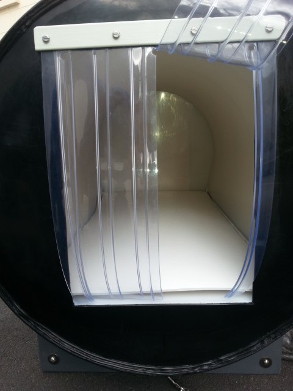

TESTING
A loose fitting “floor” was added, easy to remove for cleaning. Using polystyrene as an insulator and hanging a polycarbonate curtain at the entrance meant the dog’s own body heat raised the temperature in the kennel. As Tony explained "Blankets don’t give you any heat. They just act as insulators. You provide the heat. It’s the same here. The dog provides the heat, the kennel just insulates it. It’s more of a nest than a kennel." Tests showed the temperature inside the Thermo Kennel were at least 10 degrees warmer than the outside temperature.